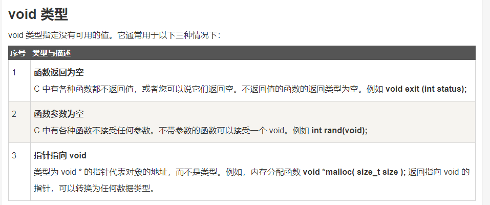
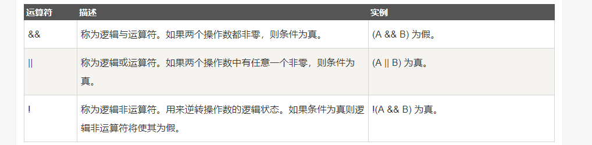

C语言
1.介绍与C编译器：
C语言是一门面向过程的计算机编程语言,与C++，Java等面向对象的编程语言有所不同。
1.C 编译器：
源代码是人类可读的代码，它需要"被编译"，转为机器语言，这样 CPU 可以按给定的机器语言指令执行程序。
C 语言编译器用于把源代码编译成最终的可执行程序。
2.第一个hello world：
①：创建hello.cpp文件：
注意：.c后缀是C语言的源程序文件，.cpp后缀是C++语言的源程序文件。c++兼容c语言的绝大部分语法特性。hello.cpp
#include <stdio.h> // #include <stdio.h> 是预处理器指令，告诉 C 编译器在实际编译之前要包含 stdio.h 文件。 int main() //int main() 是主函数，程序从main函数开始执行。 { /* 这是一段注释 , 此处的内容会被编译器忽略. */ printf("Hello, World! \n"); //printf(...) 是C中一个的函数，用于把内容打印到控制台上。 // \n ： 表示换行输出。 return 0; // return 0; 用于终止 main() 函数，并返回值 0。 }
②：编译 & 执行 C 程序：
当你执行程序后，您可以看到在控制台屏幕上显示 "Hello World".
3.基本语法：
1. 分号 ;
分号是语句结束符。也就是说，每个语句必须以分号结束。它表明一个逻辑实体的结束。
2. 注释:
注释是程序中的帮助文本，它们会被编译器忽略。
①：单行注释：
//
②：多行注释：
/* ... */
3. 标识符
标识符是用来标识变量、函数，或任何其他用户自定义的名称。
一个标识符以字母 A-Z 或 a-z 或下划线 _ 开始，后跟零个或多个字母、下划线和数字（0-9）。
C 是区分大小写的编程语言。因此，在 C 中，Manpower 和 manpower 是两个不同的标识符。
4.数据类型：
变量的数据类型决定了变量存储占用的空间，以及如何解释存储的位模式。
函数的类型指的是函数返回值的类型
数据类型分为4种：
-
基本类型 ---- 它们是算术类型，包括两种类型：整数类型和浮点类型。
-
枚举类型 ---- 它们也是算术类型，被用来定义在程序中只能赋予其一定的离散整数值的变量。
-
void类型 ---- void 表明没有可用的值。
-
派生类型 ---- 它们包括：指针类型、数组类型、结构类型、共用体类型和函数类型。
①：整数类型：

②：浮点类型：

③：void 类型：

5.变量★★★：
变量其实只不过是程序可操作的存储区的名称（使用变量好记忆）。每个变量都有特定的数据类型，类型决定了变量存储的大小和布局。
变量的名称可以由字母、数字和下划线字符组成。它必须以字母或下划线开头。大写字母和小写字母是不同的，因为 C 是大小写敏感的。
①：变量定义：
变量定义就是告诉编译器在何处创建变量的存储，以及如何通过数据类型创建变量的存储大小。
②：变量初始化：
变量可以在声明的时候被初始化（指定一个初始值）。
注：
若变量没有初始化，则变量值根据数据类型的不同，而不同。为0或null或未定义
int i, j, k; //此处定义一个int类型变量i,j,k。 char c, ch; float f, salary; double d; int b=10; //定义一个变量b，并初始化为 10（在b的存储空间存放数据10）
6.常量：
常量是固定值，在程序执行期间不会改变。
常量可以是任何的基本数据类型。
常量就像是常规的变量，只不过常量的值在定义后不能进行修改。
通常把常量定义为大写字母形式.
①：定义常量：
在 C 中，有两种简单的定义常量的方式：
- 使用 #define 预处理器。
- 使用 const 关键字。
#include <stdio.h> #define A 10 //使用#define预处理器 定义一个常量 a,a的值为10 #define B 5 int main() { const int C = 20; //用const关键字， 定义一个常量c,c的值为10 int s; s = A * B; printf("value of s : %d", s); printf("\n"); //换行 printf("value of C : %d", C); return 0; }PS： const 并不是去定义一个常量，而是去改变一个变量的存储类，把该变量所占的内存变为只读。
1.整数常量：
整数常量可以是十进制、八进制或十六进制的常量。前缀指定基数：0x 或 0X 表示十六进制，0 表示八进制，不带前缀则默认表示十进制。
DEMO:
85 /* 十进制 */ 0213 /* 八进制 */ 0x4b /* 十六进制 */ 30 /* 整数 */ 30u /* 无符号整数 , u 表示无符号整数（unsigned）*/ 30l /* 长整数 , l 表示长整数（long）*/ 30ul /* 无符号长整数 */
2.浮点常量:
浮点常量由整数部分、小数点、小数部分和指数部分组成。
DEMO：
3.14159 /* 合法的 */ 314159E-5L /* 合法的 */ 510E /* 非法的：不完整的指数 */ 210f /* 非法的：没有小数或指数 */ .e55 /* 非法的：缺少整数或分数 */
3.字符常量(单个字符):
- 字符常量是括在单引号中，例如，'x' 可以存储在 char 类型的简单变量中。
- 字符常量可以是一个普通的字符（例如 'x'）、一个转义序列（例如 '\t'），或一个通用的字符（例如 '\u02C0'）。

4.字符串常量（多个字符）：
字符串字面值或常量是括在双引号 "" 中的。
7.运算符：
运算符是一种告诉编译器执行特定的数学或逻辑操作的符号。
①：算术运算符：

- a++ 是先赋值后运算
- ++a 是先运算后赋值
#include <stdio.h> int main() { int c; int a = 10; printf(" a的初始值是 10 \n"); printf(" a++,a-- 是先赋值后运算：\n"); c = a++; printf(" c = a++ 的c值是 %d\n", c ); printf(" a 的值是 %d\n", a ); a = 10; c = a--; printf(" c = a-- 的c值是 %d\n", c ); printf(" a 的值是 %d\n", a ); printf("++a ,--a 是先运算后赋值：\n"); a = 10; c = ++a; printf(" c = ++a 的c值是 %d\n", c ); printf(" a 的值是 %d\n", a ); a = 10; c = --a; printf(" c = --a 的c值是 %d\n", c ); printf(" a 的值是 %d\n", a ); }
②：关系运算符:
假设变量 A 的值为 10，变量 B 的值为 20，则：

③：逻辑运算符：
假设变量 A 的值为 1，变量 B 的值为 0，则：

④：赋值运算符：

⑤：杂项运算符：

DEMO:
#include <stdio.h> int main() { int a; int b; /* 三元运算符实例 */ a = 10; b = (a == 1) ? 20: 30; printf( "b 的值是 %d\n", b ); //b 的值是 30 b = (a == 10) ? 20: 30; printf( "b 的值是 %d\n", b ); //b 的值是 20 }
⑥：C 中的运算符优先级（下图是从高到低排列）：
运算符的优先级确定表达式中项的组合。这会影响到一个表达式如何计算。